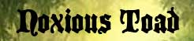
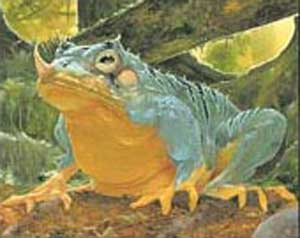
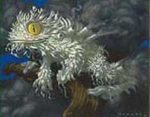
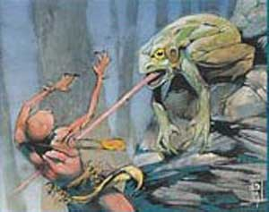
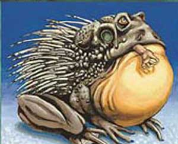

Nel mondo di Arelia vivono diverse specie di rane e rospi giganti. Queste creature, che possono anche superare la dimensione di un uomo, sono assai diverse l'une dalle altre e richiedono quindi un'analisi specifica.
|
|
Ambiente/Habitat | Acqua Dolce (Acquitrini, Paludi, Fiumi, Stagni e Laghi) |
| Frequenza | Uncommon | |
| Organizzazione | Gruppo | |
| Periodo di Attività | Qualsiasi | |
| Dieta | Carnivore | |
| Intelligenza | Animal (1) | |
| Punti Combattimento | Nessuno | |
| Tesoro | Nessuno | |
| Allineamento Dominante | Neutrale | |
| Numero di Apparizione | 1d10: (1-3) 1 (4-8) 1d6+2 (9-10) 2d6+3 | |
| Classe Armatura | 7 [10 base, -3 corazza] | |
| Movimento | 4 esagoni /Nuotare 8 esagoni | |
| Dadi Vita | 1d10: (1-3) 1 (4-8) 2 (9-10) 3 | |
| Thac0 | [1 DV] 20 [2 DV] 19 [3 DV] 18 | |
| Numero di Attacchi | Morso | |
| Danni | [1 DV] 1d3 [2 DV] 1d6 [3 DV] 1d8 | |
| Poteri Offensivi | Inghiottire; | |
| Poteri Difensivi | Nessuno | |
| Poteri Generici | Salto; | |
| Vulnerabilità | Nessuna | |
| Resistenza alla Magia | Nessuna | |
| Sensi | Vista Comune; Sensi Superiori; | |
| Dimensioni | [1
DV]
Small (1 metro, 25 kg.)
[2 DV] Medium (1,5 metri - 60 kg.) [3 DV] Medium (2 metri - 125 kg.) |
|
| Morale | Average (8) | |
| Valore in Punti Esperienza | [1 DV] 64 [2 DV] 88 [3 DV] 123 |
| MODIFICATORI AI TIRI SALVEZZA [1 DV] | |||||||||||||||||||||||
| COR | 0 | 52 | ENV | 0 | 59 | MAG | 0 | 65 | MAL | +5 | 46 | MEN | 0 | 63 | RIF | -5 | 60 | ROB | 0 | 61 | VEL | +5 | 50 |
| MODIFICATORI AI TIRI SALVEZZA [2 DV] | |||||||||||||||||||||||
| COR | 0 | 52 | ENV | 0 | 58 | MAG | 0 | 65 | MAL | +5 | 46 | MEN | 0 | 63 | RIF | -5 | 62 | ROB | 0 | 56 | VEL | +5 | 48 |
| MODIFICATORI AI TIRI SALVEZZA [3 DV] | |||||||||||||||||||||||
| COR | 0 | 49 | ENV | 0 | 55 | MAG | 0 | 62 | MAL | +5 | 42 | MEN | 0 | 60 | RIF | -5 | 59 | ROB | 0 | 53 | VEL | +5 | 44 |
Descrizione
Le Giant Frog hanno le medesime sembianze delle comuni rane fatta eccezione per la loro taglia gigante.
Combat
Le Giant Frog
sono predatori voraci ed attaccano le loro prede mordendole con le fauci.
INGHIOTTIRE
(Moderate Special
Ability):
Qualora le Giant Frog mordono una vittima particolarmente bene possono
inghiottirla parzialmente. In particolare, le Giant Frog di 1 Dado Vita possono
inghiottire fino a creature di Size Small, mentre le Giant Frog di 2 o 3 Dadi
Vita possono inghiottire fino a creature di Size Medium. Ciò avviene qualora la
Giant Frog colpisca una vittima della giusta dimensione con un
tiro per colpire naturale da 18 a 20.
Quando ciò si verifica la vittima
sarà parzialmente inghiottita dalla rana gigante,
non potrà spostarsi dalla posizione occupata
(anche la rana non potrà spostarsi)
e riceverà le penalità previste dallo stato di combattimento "Incapaciatato". Nei round successivi la
creatura bloccata potrà, quindi, essere direttamente morsa dalla rana che
colpirà la vittima ottenendo un bonus di +4 al tiro per colpire. Alla fine di
ogni round di combattimento la rana può decidere di liberare la vittima. Dal canto suo la vittima di questo attacco può effettuare un'azione
complessa per provare a liberarsi dalle fauci della rana gigante. L'azione, che fa
accumulare un punto fatica, necessita di un intero round al termine del quale la
vittima potrà effettuare una prova di forza alla quale si applicherà un
malus di -1 nel caso delle Giant Frog da 3
DV. Se la
prova riesce si sarà liberata alla fine del round. Si noti che la creatura
parzialmente inghiottita mantiene la sua posizione e può essere attaccata (come
se fosse incapacitata) da altre creature o rane. Una creatura può essere
parzialmente inghiottita da una sola rana gigante alla volta (ignorare ogni
risultato di inghiottimento fino a che la creatura è nelle fauci di una rana che
l'ha colpita precedentemente.
SALTO (Moderate Special Ability): Quando questa creatura si trova sul terreno, una volta per ogni singolo round, può, in luogo di spostarsi di 3 metri di movimento (o anche di mezzo movimento), effettuare un grande balzo fino a 9 metri di distanza. Si noti che, qualora la creatura utilizza questo metodo di movimento per uscire dal corpo a corpo la stessa dovrà subire normalmente gli attacchi di opportunità.
Habitat/Society
Come tutte le rane anche le Giant Frog amano dimorare nei luoghi umidi ricchi di acqua dolce. Possono facilmente incontrarsi in acquitrini, in zone palustri od in prossimità di laghi ruscelli o fiumi.
Ecology
[1 DV]
Mystical Resource Sourge
(Zampa) Quantità: 1, Presenza 10% - Scuola di Magia:
Alteration
- Qualità della Risorsa: Common.
[2 DV]
Mystical Resource Sourge
(Zampa) Quantità: 1, Presenza 25% - Scuola di Magia:
Alteration
- Qualità della Risorsa: Common.
[3 DV]
Mystical Resource Sourge
(Zampa) Quantità: 1, Presenza 33% - Scuola di Magia:
Alteration
- Qualità della Risorsa: Common.

|
 |
Ambiente/Habitat | Paludi e Foreste |
| Frequenza | Uncommon [Paludi] - Rare [Foreste] | |
| Organizzazione | Solitary (più raramente piccolo gruppo) | |
| Periodo di Attività | Qualsiasi | |
| Dieta | Carnivore | |
| Intelligenza | Animal (1) | |
| Punti Combattimento | Nessuno | |
| Tesoro | Nessuno | |
| Allineamento Dominante | Neutrale | |
| Numero di Apparizione |
[Paludi] 1d10: (1-6)
1
(7-10)
1d4+1 [Foreste] 1d10: (1-8) 1 (9-10) 1d3+1 |
|
| Classe Armatura | 5 [10 base, -4 corazza, -1 destrezza] | |
| Movimento | 4 esagoni /Nuotare 8 esagoni | |
| Dadi Vita | 4 (+3 punti ferita) | |
| Thac0 | 16 | |
| Numero di Attacchi | Morso | |
| Danni | 1d6+1 (taglio) | |
| Poteri Offensivi | Istinto Predatorio; Veleno; |
|
| Poteri Difensivi | Robustezza Superiore (+3 punti ferita); | |
| Poteri Generici | Salto; | |
| Vulnerabilità | Nessuna | |
| Resistenza alla Magia | Nessuna | |
| Sensi | Vista Comune; Sensi Superiori; | |
| Dimensioni | Medium (2 metri - 95 kg.) | |
| Morale | Steady (11) | |
| Valore in Punti Esperienza | 297 |
| MODIFICATORI AI TIRI SALVEZZA | |||||||||||||||||||||||
| COR | 0 | 49 | ENV | 0 | 55 | MAG | 0 | 62 | MAL | +5 | 42 | MEN | 0 | 60 | RIF | 0 | 54 | ROB | 0 | 53 | VEL | +10 | 39 |
Descrizione
I Noxious Toad sono dei rospi giganti dalla pelle molto ruvida e dalla colorazione accesa. Il loro ventre è color giallo oro mentre la parte superiore del loro copro è di tonalità verdastra. Sulla parte superiore della bocca sporge un piccolo corno acuminato.
Combat
I Noxious Toad sono predatori voraci ed attaccano le loro prede mordendole con le fauci capaci di iniettare veleno paralizzante.
ISTINTO PREDATORIO (Moderate Special Ability): La creatura possiede un forte istinto predatorio, per tale motivo costei riceve un bonus costante di +1 ai suoi tiri per colpire.
VELENO (Moderate Special Ability) [MORSO]: Se la creatura colpisce con l'attacco indicato una vittima, la stessa inietterà nel suo corpo il seguente veleno: Tipologia Insinuativo, Onset 1 round, Effetti 0/Impedito (hindered) per 1 round, Delay None, Tiro Salvezza senza modificatori, Assuefazione nessuna.
ROBUSTEZZA SUPERIORE (Typical Ability): Il fisico di questa creatura è estremamente robusto conferendole una robustezza superiore che le garantisce 3 punti ferita supplementari.
SALTO (Moderate Special Ability): Quando questa creatura si trova sul terreno, una volta per ogni singolo round, può, in luogo di spostarsi di 3 metri di movimento (o anche di mezzo movimento), effettuare un grande balzo fino a 9 metri di distanza. Si noti che, qualora la creatura utilizza questo metodo di movimento per uscire dal corpo a corpo la stessa dovrà subire normalmente gli attacchi di opportunità.
Habitat/Society
Come tutti i rospi anche i Noxious Toad amano dimorare nei luoghi umidi come le zone palustri ed il fitto sottobosco.
Ecology
Mystical Resource Sourge
(Zampa) Quantità: 1, Presenza 25% - Scuola di Magia:
Alteration
- Qualità della Risorsa: Common.
Mystical Resource Sourge
(Lingua) Quantità: 1, Presenza 25% - Effetto Particolare:
Veleno
- Qualità della Risorsa: Common.
|
 |
Climate/Terrain | Foreste |
| Frequency | Rare | |
| Organization | Solitary | |
| Activity Cycle | Any | |
| Diet | Carnivore | |
| Intelligence | Animal (1) | |
| Treasure | None | |
| Alignment | Neutral | |
| No. Appearing | 1 | |
| Armor Class | 4 | |
| Movement | 9, Sw 9 | |
| Hit Dice | 3+3 | |
| Thac0 | 17 | |
| No. of Attacks | Morso | |
| Damage / Attacks | 1d4 | |
| Special Attacks | Salto, Veleno, Nube di Spore | |
| Special Defenses | Immunità al Veleno | |
| Special Weakness | Nessuna | |
| Magic Resistance | Nessuna | |
| Size | Medium (1,60 metri - 85 kg.) | |
| Morale | Steady (11) | |
| XP value | 175 xp |
Descrizione
La Spore Frog è una rana gigante di medie dimensioni. La superficie del suo corpo è cosparsa di una densa e resistente mucillagine biancastra in grado di attutire i colpi ricevuti dalla rana. Sul suo dorso, inoltre, sono presenti cavità tubolari dalle quale la rana può spruzzare una nube di spore. Gli occhi della rana sono di colore giallo intenso.
Combat
La Spore Frog
attacca principalmente mordendo le proprie vittime.
SALTO:
Quando le Spore Frog si trovano sul
terreno, una volta per ogni singolo round, queste creature possono, in luogo di
spostarsi di 3 metri di movimento (o anche di mezzo movimento), effettuare un
grande balzo fino a
9 metri di distanza. Si noti che, qualora la rana
utilizzi questo metodo di movimento per uscire dal corpo a corpo lo stesso dovrà
subire normalmente gli attacchi di opportunità.
VELENO:
Il Morso della Spore Frog è molto velenoso. Chi è colpito dal morso di questa
creatura, infatti, subirà gli effetti del seguente veleno insinuativo:
Tossina della Rana Bianca: Onset
1 round,
Effetti
3/9,
Delay
none,
Tiro Salvezza
- 1,
Assuefazione
none.
NUBE DI SPORE:
In luogo di effettuare un normale attacco la Spore Frog, impiegando un'azione
complessa con fattore iniziativa pari a +3, è in grado di spargere una nube di
spore venefiche intorno a se. Le spore si
cospargeranno in un'area sferica di
12 metri di diametro il cui centro
è corrispondente alla posizione della rana. Tutti coloro si trovano
nell'area d'effetto saranno colpiti dal seguente veleno gassoso a contatto:
Spore della Paralisi
: Onset
1 round,
Effetti
0/Paralizzato (Hold) per 3 rounds,
Delay
none,
Tiro Salvezza
0,
Assuefazione
4 rounds.
Una volta utilizzato questo
attacco speciale la Spore Frog non
potrà riutilizzarlo nei successivi 4 rounds
di combattimento.
IMMUNITA' AL VELENO: La Spore
Frog è immune agli effetti di qualsiasi tipologia di veleno.
Habitat/Society
Questi rana dimora nelle zone boschive dove resta nascoste tra le foglie prima di scagliarsi contro i propri nemici.
Ecology
Mystical Resource Sourge
(Zampa) Quantità: 1, Presenza 20% - Scuola di Magia:
Alteration
- Qualità della Risorsa: Common.
Mystical Resource Sourge
(Lingua) Quantità: 1, Presenza 25% - Effetto Particolare:
Veleno
- Qualità della Risorsa: Common.
|
 |
Climate/Terrain | Colline e Montagne |
| Frequency | Rare | |
| Organization | Solitary o Piccolo gruppo | |
| Activity Cycle | Any | |
| Diet | Carnivore | |
| Intelligence | Animal (1) | |
| Treasure | None | |
| Alignment | Neutral | |
| No. Appearing | 1d3 | |
| Armor Class | 5 | |
| Movement | 9, Sw 9 | |
| Hit Dice | 4+5 | |
| Thac0 | 16 | |
| No. of Attacks | Morso | |
| Damage / Attacks | 1d6 | |
| Special Attacks | Salto, Lingua Perforante | |
| Special Defenses | Nessuna | |
| Special Weakness | Nessuna | |
| Magic Resistance | Nessuna | |
| Size | Medium (2 metri - 100 kg.) | |
| Morale | Steady (12) | |
| XP value | 250 xp |
Descrizione
La Speartongue Frog è una rana gigante di medie dimensioni. La sua pelle varia con tonalità verde scuro e marroni.
Combat
La Speartongue Frog attacca con il suo morso e la sua lingua appuntita.
SALTO: Quando la Speartongue Frog si trova sul terreno, una volta per ogni singolo round, questa creatura può, in luogo di spostarsi di 3 metri di movimento (o anche di mezzo movimento), effettuare un grande balzo fino a 12 metri di distanza. Si noti che, qualora la rana utilizzi questo metodo di movimento per uscire dal corpo a corpo la stessa dovrà subire normalmente gli attacchi di opportunità.
LINGUA
PERFORANTE:
La Speartongue Frog deve il suo nome alla sua incredibile lingua appuntita in
grado di perforare la carne dei suoi nemici. Questa lingua perforante può essere
utilizzata in due modi diversi.
* In particolare, la rana può
attaccare una qualsiasi creatura ad un esagono di distanza
da se stessa. Si tratta di un attacco ordinario che, potendo essere effettuato
ad un esagono di distanza, la rana utilizza principalmente quando, per qualsiasi
motivo, non riesce ad attaccare (o non desidera attaccare) la sua vittima
designata in corpo a corpo. Quando la rana attacca in questo modo, la stessa
ottiene una penalità di -1 al tiro
per colpire. Se l'attacca va a
segno la lingua provocherà 1d10
danni da punta (perforazione).
Essendo la lingua stretta e lunga, la rana può attaccare in questo modo anche se
tra la stessa e la vittima sono presenti altre creature od ostacoli fisici che
permettano comunque il passaggio della lingua (in questo ultimo caso la rana
possono applicarsi altri eventuali modificatori al tiro per colpire). Si noti
che la rana non può utilizzare
questa forma di attacco contro avversari che si trovano in corpo a corpo.
Inoltre, la rana non può effettuare
attacchi di opportunità utilizzando
questa metodologia di attacco.
* La seconda modalità è, invece, passiva. Quando, infatti, la rana colpisce con
il morso, in corpo a corpo, una vittima con precisione, effettuando un
tiro per colpire naturale pari a 17, 18,
19 e 20, la stessa oltre a mordere
il proprio avversario potrà provare a "sparare" letteralmente nella suo corpo la
lingua appuntita. Si tratta di un
attacco extra simultaneo
che la rana potrà effettuare,
esclusivamente contro la medesima vittima che ha morso,
con un bonus di +2 al tiro per colpire.
Se l'attacca va a segno la lingua provocherà
1d10 danni da punta
(perforazione).
Habitat/Society
Questi rana dimora fra le rocce montane e di collina prediligendo queste cosparse di muschi e licheni situate nelle grotte e nelle zone d'ombra.
Ecology
Mystical Resource Sourge (Lingua) Quantità: 1, Presenza 33% - Scuola di Magia: Alteration - Qualità della Risorsa: Common.
|
 |
Ambiente/Habitat | Qualsiasi tranne Ghiacciai e Zone Artiche, Zone Marine, Deserti e Zone Aride, Centri Abitati |
| Frequenza | Rare | |
| Organizzazione | Solitary | |
| Periodo di Attività | Qualsiasi | |
| Dieta | Carnivore | |
| Intelligenza | Animal (1) | |
| Punti Combattimento | Nessuno | |
| Tesoro | Nessuno | |
| Allineamento Dominante | Neutrale | |
| Numero di Apparizione | 1 | |
| Classe Armatura | 3 [10 base, -6 corazza, -1 destrezza] | |
| Movimento | 4 esagoni /Nuotare 6 esagoni | |
| Dadi Vita | 5 (+5 punti ferita) | |
| Thac0 | 15 | |
| Numero di Attacchi | Morso | |
| Danni | 1d8+2 (taglio) | |
| Poteri Offensivi | Istinto Predatorio; Inghiottire; |
|
| Poteri Difensivi |
Spine; Robustezza Superiore (+5 punti ferita); |
|
| Poteri Generici | Salto; | |
| Vulnerabilità | Nessuna | |
| Resistenza alla Magia | Nessuna | |
| Sensi | Vista Comune; Sensi Superiori; | |
| Dimensioni | Large (3 metri - 200 kg.) | |
| Morale | Elite (14) | |
| Valore in Punti Esperienza | 562 |
| MODIFICATORI AI TIRI SALVEZZA | |||||||||||||||||||||||
| COR | 0 | 45 | ENV | 0 | 50 | MAG | 0 | 59 | MAL | +5 | 39 | MEN | 0 | 57 | RIF | 0 | 53 | ROB | +5 | 42 | VEL | 0 | 41 |
Descrizione
Gli Spine Toad sono dei rospi giganti di grandi dimensioni. Il loro ventre è color giallo acceso mentre la parte superiore del loro copro è di tonalità marrone. Sulla parte superiore del loro corpo queste creature sono cosparse di lunghi e acuminati aculei che si drizzano in battaglia divenendo una strategica arma difensiva.
Combat
Gli Spine Toad sono predatori voraci ed attaccano le loro prede mordendole con le fauci.
ISTINTO PREDATORIO (Moderate Special Ability): La creatura possiede un forte istinto predatorio, per tale motivo costei riceve un bonus costante di +1 ai suoi tiri per colpire.
INGHIOTTIRE (Moderate Special Ability): Qualora le Giant Frog mordono una vittima particolarmente bene possono inghiottirla parzialmente. In particolare, le Giant Frog di 1 Dado Vita possono inghiottire fino a creature di Size Small, mentre le Giant Frog di 2 o 3 Dadi Vita possono inghiottire fino a creature di Size Medium. Ciò avviene qualora la Giant Frog colpisca una vittima della giusta dimensione con un tiro per colpire naturale da 18 a 20. Quando ciò si verifica la vittima sarà parzialmente inghiottita dalla rana gigante, non potrà spostarsi dalla posizione occupata (anche la rana non potrà spostarsi) e riceverà le penalità previste dallo stato di combattimento "Incapaciatato". Nei round successivi la creatura bloccata potrà, quindi, essere direttamente morsa dalla rana che colpirà la vittima ottenendo un bonus di +4 al tiro per colpire. Alla fine di ogni round di combattimento la rana può decidere di liberare la vittima. Dal canto suo la vittima di questo attacco può effettuare un'azione complessa per provare a liberarsi dalle fauci della rana gigante. L'azione, che fa accumulare un punto fatica, necessita di un intero round al termine del quale la vittima potrà effettuare una prova di forza alla quale si applicherà un malus di -1 nel caso delle Giant Frog da 3 DV. Se la prova riesce si sarà liberata alla fine del round. Si noti che la creatura parzialmente inghiottita mantiene la sua posizione e può essere attaccata (come se fosse incapacitata) da altre creature o rane. Una creatura può essere parzialmente inghiottita da una sola rana gigante alla volta (ignorare ogni risultato di inghiottimento fino a che la creatura è nelle fauci di una rana che l'ha colpita precedentemente.
SPINE (Moderate Special Ability) : Il corpo della creatura è cosparso da duri e pericolosi aculei. Questi aculei, oltre a rappresentare una corazza naturale per la creatura, si drizzano in combattimento con la conseguenza che tutti coloro attaccano questa creatura in corpo a corpo con armi (ad eccezione delle Polearm) od attacchi fisici corrono il rischio di ferirsi ogni volta che effettuano un attacco. In particolare, ogni volta che una creatura attacca in corpo a corpo questo essere mostruoso, la stessa dovrà superare un tiro salvezza su riflessi. A questo tiro non si applicheranno i modificatori dovuti alla differenza di livello tra il mostro e la creatura attaccante. Se l'attacco è effettuato con un'arma di taglia large la creatura riceverà un bonus di +5 al tiro salvezza, se l'attacco è effettuato con un'arma di taglia medium la creatura non riceverà modificatori al tiro salvezza, se l'attacco è effettuato con un'arma di taglia small la creatura riceverà un malus di -5 al tiro salvezza, se l'attacco è effettuato con attacchi fisici la creatura riceverà un malus di -10 al tiro salvezza. Il tiro salvezza deve essere ripetuto per ogni singolo attacco effettuato contro il mostro. La creatura, inoltre, può impiegare punti combattimento per ricevere bonus a tali tiri salvezza. Ogni 3 punti di combattimento impiegati la creatura riceverà un bonus di +1 al tiro salvezza su quel singolo attacco. Non possono essere impiegati più di 9 punti combattimento (+3 al tiro salvezza) su ogni singolo attacco effettuato. I punti combattimento vanno utilizzati direttamente prima del lancio del dado relativo al tiro salvezza che la creatura desidera migliorare. Si tratta di una modalità speciale di utilizzo dei punti combattimento che non incide (ad esempio per quanto attiene al cumulo) sulle normali regole concernenti l'uso dei punti combattimento. Ogni volta che la vittima fallisce il tiro salvezza la stessa subisce 1d3 danni da punta (perforazione). Se il tiro salvezza riesce con un successo critico la creatura non dovrà effettuare alcuna prova per i due successivi attacchi effettuati nei confronti del mostro nel medesimo combattimento. Se il tiro salvezza fallisce con un fallimento critico il danno da punta prodotto sarà considerato un danno critico.
ROBUSTEZZA SUPERIORE (Typical Ability): Il fisico di questa creatura è estremamente robusto conferendole una robustezza superiore che le garantisce 5 punti ferita supplementari.
SALTO (Moderate Special Ability): Quando questa creatura si trova sul terreno, una volta per ogni singolo round, può, in luogo di spostarsi di 3 metri di movimento (o anche di mezzo movimento), effettuare un grande balzo fino a 9 metri di distanza. Si noti che, qualora la creatura utilizza questo metodo di movimento per uscire dal corpo a corpo la stessa dovrà subire normalmente gli attacchi di opportunità.
Habitat/Society
Gli Spine Toad sono creature solitarie che vagano in cerca di prede e possono essere incontrati pressoché in ogni luogo ad eccezione dei ghiacciai e delle zone artiche, delle zone marine, dei deserti e delle zone aride, dei centri abitati.
Ecology
Mystical Resource Sourge (Zampa) Quantità: 1, Presenza 33% - Scuola di Magia: Alteration - Qualità della Risorsa: Common.
|
|
Ambiente/Habitat | Acqua Dolce (Acquitrini, Paludi, Fiumi, Stagni e Laghi) |
| Frequenza | Rare | |
| Organizzazione | Solitary | |
| Periodo di Attività | Qualsiasi | |
| Dieta | Carnivore | |
| Intelligenza | Animal (1) | |
| Punti Combattimento | Nessuno | |
| Tesoro | Nessuno | |
| Allineamento Dominante | Neutrale | |
| Numero di Apparizione | 1 | |
| Classe Armatura | 6 [10 base, -4 corazza] | |
| Movimento | 4 esagoni /Nuotare 8 esagoni | |
| Dadi Vita | 7 (+10 punti ferita) | |
| Thac0 | 13 | |
| Numero di Attacchi | Morso | |
| Danni | 2d6 | |
| Poteri Offensivi | Istinto Predatorio; Inghiottire Straordinario; |
|
| Poteri Difensivi | Robustezza Superiore (+10 punti ferita); | |
| Poteri Generici | Salto Superiore; | |
| Vulnerabilità | Nessuna | |
| Resistenza alla Magia | Nessuna | |
| Sensi | Vista Comune; Sensi Superiori; | |
| Dimensioni | Huge (4 metri alto, 6 metri lungo) | |
| Morale | Elite (13) | |
| Valore in Punti Esperienza | 1205 |
| MODIFICATORI AI TIRI SALVEZZA [1 DV] | |||||||||||||||||||||||
| COR | 0 | 42 | ENV | 0 | 45 | MAG | 0 | 57 | MAL | +5 | 36 | MEN | 0 | 55 | RIF | -5 | 57 | ROB | 0 | 41 | VEL | +5 | 28 |
Descrizione
Questa creatura ha le medesime sembianze dei comuni rospi fatta eccezione per la sua taglia gigantesca.
Combat
I Rospi Imperiali sono predatori voraci ed attaccano le loro prede mordendole con le fauci fino a che non riescono ad inghiottire una vittima. A quel punto, se minacciati, saltano via a grandi balzi o nuotando veloci allontanandosi con la preda ingerita.
ISTINTO PREDATORIO (Moderate Special Ability): La creatura possiede un forte istinto predatorio, per tale motivo costei riceve un bonus costante di +1 ai suoi tiri per colpire.
INGHIOTTIRE STRAORDINARIO (Powerful Special Ability): Qualora il Rospo Imperatore morde una vittima particolarmente bene può letteralmente inghiottirla. In particolare, questi rospi possono inghiottire fino a creature di Size Large. Ciò avviene qualora il Rospo Imperatore colpisca una vittima della giusta dimensione con un tiro per colpire naturale da 17 a 20. Quando ciò si verifica la vittima sarà completamente inghiottita dalla rana gigante. Trovandosi all'interno della rana la vittima, riceverà le penalità previste dallo stato di combattimento "Impedito" e non potrà utilizzare incantesimi che richiedano il corretto utilizzo dei componenti somatici. Una volta inghiottita una creatura il rospo non potrà inghiottirne altre ma potrà continuare a combattere regolarmente. Alla fine di ogni round di combattimento il rospo può decidere di liberare la vittima sputandola fuori con una free action. Dal canto suo la vittima può attaccare il rospo dall'interno, in tal caso si consideri che lo stesso ha una classe armatura pari ad AC 8, la vittima, però, subirà - 2 di penalità se usa armi medium, - 4 se usano armi large. Utilizzare un'arma a due mani impone un'ulteriore penalità cumulativa di - 2 al tiro per colpire. Alla fine di ogni round, a partire dal successivo a quello in cui la vittima è stata inghiottita, la stessa subirà 1d6+4 danni da acido a causa dei succhi gastrici del Rospo Imperiale. Una volta ucciso il rospo, la vittima potrà uscire dal suo interno impiegando un intero round.
ROBUSTEZZA SUPERIORE (Typical Ability): Il fisico di questa creatura è estremamente robusto conferendole una robustezza superiore che le garantisce 10 punti ferita supplementari.
SALTO SUPERIORE (Superior Special Ability): Quando questa creatura si trova sul terreno, una volta per ogni singolo round, può, in luogo di spostarsi di 3 metri di movimento (o anche di mezzo movimento), effettuare un grande balzo fino a 12 metri di distanza. Si noti che, qualora la creatura utilizza questo metodo di movimento per uscire dal corpo a corpo la stessa dovrà subire normalmente gli attacchi di opportunità.
Habitat/Society
I Rospi Imperiali sono creature solitarie che vagano in cerca di prede e possono essere incontrati esclusivamente nelle grandi paludi od in prossimità di grandi acquitrini.
Ecology
I Rospi Imperiali sono molto ricercati dai Froglar che, non senza grandi difficoltà, li addestrano come cavalcature.
Mystical Resource Sourge (Zampa) Quantità: 1, Presenza 50% - Scuola di Magia: Alteration - Qualità della Risorsa: Uncommon.